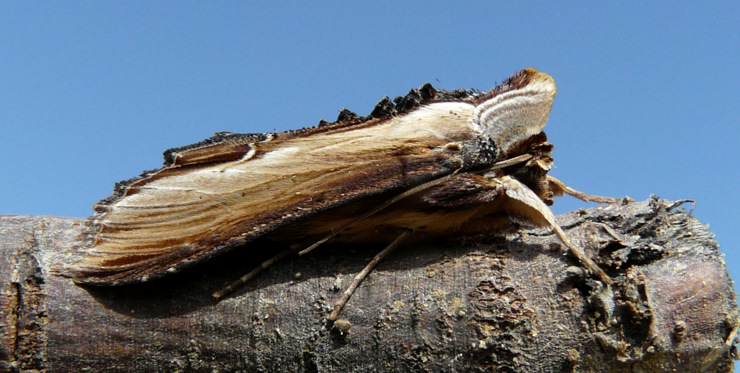
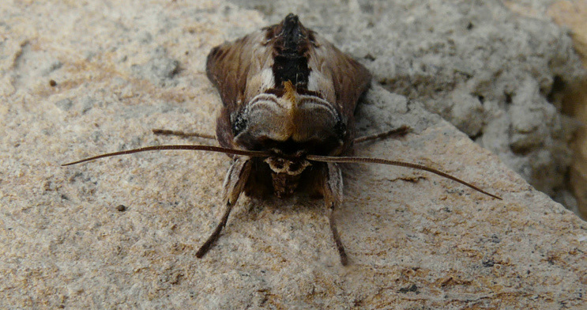
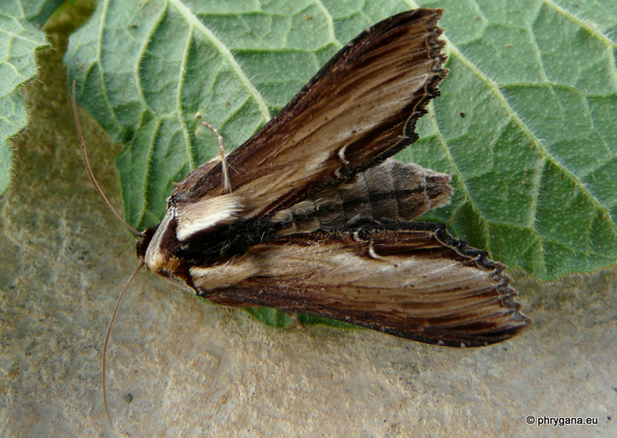

| PHRYGANA | Fauna | Flora |
additions nouveautés |
espèces species |
contact -
info - commentaires phrygana1 (at) gmail.com |
| diversité crétoise -- Cretan diversity | |||||
| Cucullia (Shargacucullia) verbasci (Linnaeus 1758) |
| 233 | Fauna | NOCTUIDAE | Cuculliinae | Cucullia |
|
 Cucullia verbasci Melambes (Agios Giorgos) 06 mars 2011 |
| fr: la Cucullie du bouillon-blanc en: The Mullein de: Königskerzen-Mönch |
| Envergure: 46 - 48 mm; couleur de beige clair à brun foncé sur les bords des ailes |
| Larve oligophage: diverses Scrophulariaceae dont Verbascum sp., Scrophularia sp. |
| Espèce univoltine: période de vol en février mars |
| Statut en Crète: indigène -- native |
| Biotopes en Crète: phrygana, olivaies, garrigue, terrains vagues. |
| Distribution: Europe |
|
 Cucullia verbasci Melambes (Agios Giorgos) 06 mars 2011 |
|
 Cucullia verbasci Melambes (Agios Giorgos) 06 mars 2011 |
| 08 mars 2011 |
| © paul fontaine -- © Phrygana.eu 2007 -- 2013 |